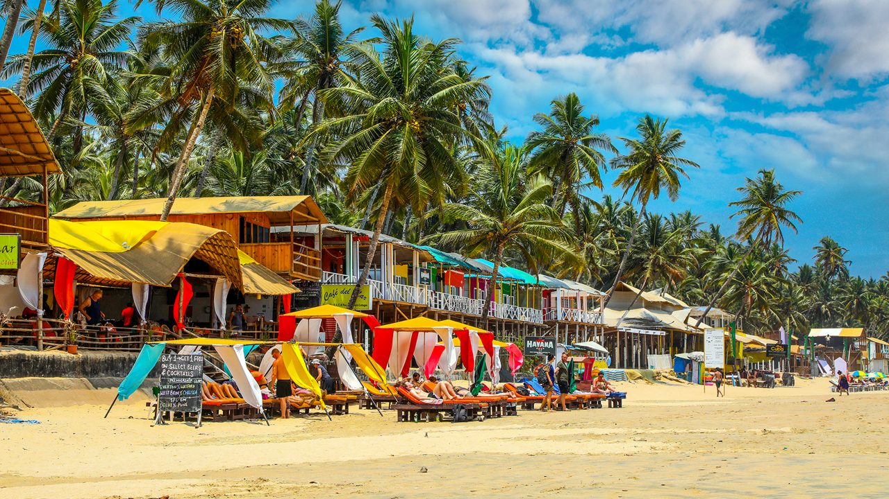

Goa is a major Indian tourist destination famous for its beautiful beaches,
vibrant nightlife, historical sites like colonial Portuguese architecture,
and rich blend of Indian and Portuguese culture. Tourists are drawn to Goa
for world-class cuisine, religious sites such as the Basilica of Bom Jesus,
thrilling water sports, bustling markets, and the lively atmosphere of its
beach shacks and casinos.

Best things to do in Goa
Visiting popular beaches like Baga and Palolem,
Experiencing Dudhsagar Falls
Exploring historical sites like the Basilica of Bom Jesus
Enjoying water sports such as scuba diving and parasailing
Taking a Mandovi River cruise, shopping at the Anjuna Flea Market
Indulging in the vibrant nightlife at places like Tito's Lane